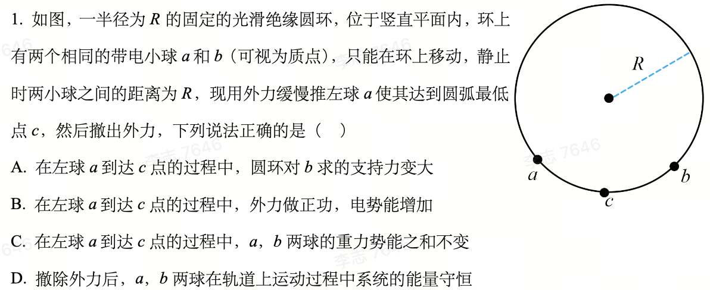

读题判断
先读题、看图，再对四个选项逐项判「对 / 错」。提交只记录你的选择，不提示对错；四项都判完后统一对照，并告诉你每项的判断在本课件哪里可以重新建立。

题面勘误说明（按需展开）
原稿 A 选项中“b求”按语义更正为“b球”，其余题意不变。
观察过程
观察任务：把 a 从初始位置慢慢拖向最低点 c。盯住三件事——α(t) 怎么变、β(t) 怎么跟着调整、d(t) 怎么变。题目只说“缓慢”，所以这里的位置轴不标秒数；“自动拖动”只是替你匀速拖一遍。
两种观察互斥。当前：只保留两球、弦和三个过程量；初态轮廓只在“对照初态”时淡化出现。
当前：只显示作用于 b 的三个力——重力 mg、库仑斥力 Fe(t)、支持力 Nb(t)；方向与相对长短来自同一状态。外加推力作用在 a 上，不进 b 的受力图。
把 a 推到 c 之后才能撤去外力——这正是题目的设定；撤力前的最后一刻，就是释放后的第一刻。
从 a 到 c 的末态释放，两球由静止开始运动。下面是物理时间轴 t（单位 s），可以播放、暂停、拖动和复位；0.5× / 1× 只是演示倍率，不改变物理时间。
三段长度随运动此消彼长，总长度保持不变——能量只在三种形式之间转化。重力势能零点取在 c 点高度。能量条用来观察和验证，判断 D 的论证在「选系统」。
选方向，再谈支持力
α、β 均从最低点 c 起算。b 只受三个力：重力、库仑斥力、环的支持力（始终指向圆心）。可以拖 a 或用滑块换一个位置看。
只看几何：半径、弦、切线。弦 ab 对圆心张角为 α+β；弦与切线的夹角等于它所夹圆心角的一半。
只看切向：两个虚线投影沿切向反向、等长——这正是“切向合力为零”。拖动 a，等长关系保持。
只看径向：两个虚线分量沿径向首尾相接，其和与支持力等长；支持力始终指向圆心。
端点比较：左图在初态 / 末态的最小受力快照间切换，与右侧推导逐步对应；箭头长短变化只用于观察，判断依据在右侧。
先想一步：分析 b 的平衡，为什么不优先沿水平 / 竖直方向分解？
理由：支持力 沿半径（径向）。沿切向 / 径向分解时，切向方程不含它，可以直接由重力与库仑力的切向分量定出 b 的平衡位置； 留到径向方程再求。若选水平 / 竖直，两个方程都同时含有 与 ，必须联立，更繁。
接着按顺序看：先把弦—切线的角度关系说清楚（半角几何），再分别用切向、径向两个方向列关系，最后在两个端点精确比较支持力。
对照：若选水平 / 竖直分解（按需展开）
水平：；竖直：（ 为弦与竖直方向夹角）。两个方程都含 与 ，须联立消元才能定 ——这就是不优先选它的原因。
半角几何：弦—切线夹角从哪来
左图只保留几何：两条半径、 弦与过 b 的切线。弦 ab 对圆心的张角是 （α、β 都从 c 起算）。
由“弦切角等于所夹圆心角的一半”，弦与切线的夹角为 ——这就是把库仑力投影到切向、径向时要用的角。
本状态不列方程；角度关系建立后，进入「切向关系」。
切向关系：先定平衡位置
= ，其中
切向不含支持力，因此先决定 b 的平衡位置。左图两个切向投影反向等长；拖动 a，等长始终保持——这就是“每个位置 b 都处于平衡”的意思。
径向关系：再定支持力
= +
位置确定后，径向关系决定支持力。左图两个径向分量首尾相接，绿色支持力与两者之和同步长短。
端点比较：只比两端，精确算（判 A）
初态（）：由切向平衡
再由径向关系：
末态（a 到达 c，）：由切向平衡 ，利用 ，得
再由径向关系：
比较：（因为 ）。支持力没有变大，A 错误。
这条路径只用题设、切向 / 径向关系和倍角公式。想再看一遍变化过程，回「观察过程」拖一次 a。
比关系，判断 B / C
证据轨道：右侧一次只展开一张证据卡，左图随之切换；点开任何一张都可以，缺前提时点卡片里的引用就地补齐。
过程里三个量一直在变：、、（可回「观察过程」再看）。初态记 ；末态 a 到 c，记 。末态 ，射线 Oa 与 Oc 重合，圆心角只剩 ——这只说明末态的角度，不表示球间距离不变。
作 ：等腰三角形 Oab 中，OM 平分圆心角，得到 ；，于是
定义 。由「半角与弦长」直接得到 。这张卡只建立 x，不展开后面的代数。
左图只看初态：、。由 ：
左图对照 与 。库仑力与距离平方成反比：距离变为 倍，力变为 ：
左图只看末态 b 的切向分解。由 （末态 ）：
为什么（三角细节）
，两边约去 得 ；再由 ，即 。
左图不再增加元素。把上面两张卡的结果并列：，约去 mg，得到
考场压缩：一步写出 x³ = 1/√3（复盘，按需展开）
；，同时 ；所以 。
由 得 ，即 ——两球靠近。引用：
左图只定位两球的初、末位置： 降到 c， 升到 。
点公式项，左图高亮对应的那段弧：
（a 从 30° 降到 c）
（b 从 30° 升到 ）
由 得 。把两项高度代入账目：
，而 ，成立。
所以 ，——重力势能之和增加，不是不变，C 错误。
完整的系统选择训练在「选系统」。
选系统，再谈守恒
系统边界图始终在场。右侧四个问题可以按任意顺序打开；左图只显示当前问题的证据，不累计所有箭头。
判断 D 的骨架：选系统 → 分类相互作用与功 → 写守恒式。四个问题没有先后要求，按你想的顺序来；四问都有结论后，才写守恒式。
每个球仍受：重力、两球间的库仑力、圆环的支持力。外加推力已撤去，不再存在（左图灰色删除标记）。
重力 → 重力势能 （系统含地球）；两球间库仑相互作用 → 电势能 。
提醒：保守力做功会转化为势能变化——“保守力”不等于“不做功”。
不做功。 是环对球的支持力，始终沿半径； 是该球的速度，始终沿圆环切线——小球的瞬时位移沿切线，支持力沿半径，两者始终垂直。
结论：。
为什么垂直就不做功
元功 ——每一段微小位移上支持力都不做功，全程自然也不做功。
没有：推力已撤，环光滑无摩擦。再注意：库仑力是系统内力，但它对两球做功之和不为零，表现为 的变化——“内力”不等于“功相消”。
+ +